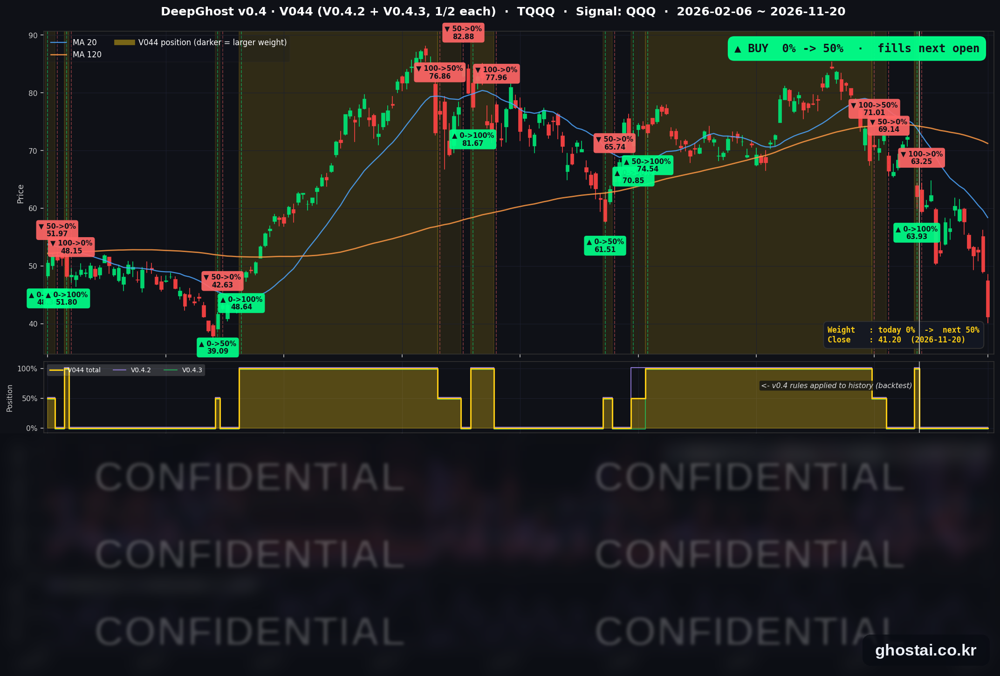

엔비디아 14% 급락에 나스닥 5% 하락·S&P 500 조정 진입, TQQQ 비중 50% 매수 신호 발생
· Ghost.AI 데일리 리포트
👻 매일 시그널과 히스토리를 홈페이지에서 한눈에 → www.ghostai.co.kr
회원 페이지 안내 — 회원 가입 데일리 레포트의 "오늘의 매매 신호"는 26년 12월 31일까지만 제공됩니다. 이후는 회원 페이지(무료) 에서 확인하시기 바랍니다.
엔비디아가 미 증권거래위원회(SEC) 회계 조사 보도로 14.01% 내렸고, 반도체주가 모두 내리면서 나스닥은 5.28% 하락해 올해 상승분을 모두 반납했습니다. S&P 500 과 다우는 최고 종가보다 10% 넘게 낮아져 조정 국면에 들어갔고, VIX 는 38 대로 2025년 4월 이후 가장 높습니다. 금리는 크게 내렸습니다. TQQQ 는 15.94% 내린 41.20달러로 마감했고, 전략은 TQQQ 비중을 0% 에서 50% 로 늘리는 매수 신호를 냈습니다. 매수는 다음 거래일인 11월 23일(월) 미국 장 시가에 이뤄집니다.
📊 오늘의 매매 신호
| 항목 | 내용 |
|---|---|
| 오늘의 신호 | 🟢 전략 매수 신호 발생 — 전략은 다음 거래일 미국 장 시가에 TQQQ 를 매수합니다 (한국시간 오후 10:30, 11~3월은 11:30) |
| 전략 비중 | 0% → 다음 거래일 시가 50% |
| 포지션 상태 | 매수 신호 발생 (체결 전) — TQQQ 일부 보유 예정 (비중 50%) |
| 신호 발생일 | 2026-11-20 (체결 예정 11월 23일 월요일 시가) |
| 직전 현금 보유 기간 | 2026-11-02 ~ 2026-11-20 (15거래일, 11월 2일 시가 매도 후) |
| 최근 매매 | 10월 30일 $63.93 매수 → 11월 2일 $63.25 매도(-1.06%) |
TQQQ 시그널 — OUT OF POSITION → 매수 신호 발생
현재 상태: 매수 신호 발생 | 전략 비중 0% → 11월 23일(월) 미국 장 시가 50%

전략은 11월 2일 시가 63.25달러에 TQQQ 를 전량 매도한 뒤 15거래일 동안 현금을 보유했고, 11월 20일 TQQQ 비중을 50% 로 늘리는 매수 신호를 냈습니다. 매도 뒤 첫 매수입니다. 체결은 11월 23일(월) 미국 장 시가이고, 평균 단가는 그날 시가로 정해집니다. 11월 2일 v0.4 공식 전환 이후 전략 수익률은 +2.00% 입니다.
TQQQ 는 3.02% 낮게 출발해 15.94% 내린 41.20달러로 마감했습니다. 3월 30일 이후 가장 낮은 종가이고, 이번 주(11월 13일 종가 대비) 28.57% 내렸습니다. 6월 2일 최고 종가(87.22달러)보다 52.76%, 11월 2일 매도가보다 34.86% 낮습니다.
홈페이지 「오늘의 시그널」은 v0.3 기준이라 오늘도 현금 보유로 표시됩니다. 이 글의 신호는 같은 AI 신호에 비중 조절을 더한 개선판 v0.4 기준이며, 자세한 화면은 회원 페이지에서 볼 수 있습니다.
오늘 미국 시장 — 시황 요약
지수 마감
| 지수 | 종가 | 등락률 |
|---|---|---|
| S&P 500 | 6,910.39 | -3.70% |
| 나스닥 종합 | 22,617.73 | -5.28% |
| 다우존스 | 48,147.33 | -1.93% |
| 러셀 2000 (IWM) | 256.68 | -2.85% |
| QQQ (나스닥100) | 608.45 | -5.67% |
| TQQQ | 41.20 | -15.94% |
S&P 500 은 10월 6일 최고 종가(7,818.93)보다 11.62%, 다우는 8월 5일 최고 종가보다 11.41% 낮아 둘 다 조정 기준(-10%)을 넘었습니다. 나스닥은 10월 6일 최고 종가보다 18.05% 낮고 연초 대비 -2.69% 로 올해 수익이 마이너스가 됐습니다. QQQ 는 장중 한때 고점보다 20.20% 낮아 약세장 기준(-20%)을 넘었다가 -19.90% 로 마감했습니다. 나스닥의 하루 하락 폭은 11월 5일 이후 가장 크고, 종가는 4월 7일 이후 가장 낮습니다.
이번 주 나스닥은 10.02%, S&P 500 은 8.61% 내렸습니다. QQQ 의 주간 하락(-10.51%)은 2020년 3월 이후 가장 크고, S&P 500 은 7거래일 연속 내려 2020년 2월 이후 처음으로 7일 연속 하락했습니다.
국채 금리 동향
| 만기 | 11/19 | 11/20 | 전일 대비 |
|---|---|---|---|
| 3개월 | 4.147% | 4.122% | -2.5bp |
| 2년 (재무부 기준) | 4.76% | 4.63% | -13bp |
| 5년 | 4.866% | 4.701% | -16.5bp |
| 10년 | 5.052% | 4.912% | -14.0bp |
| 30년 | 5.401% | 5.303% | -9.8bp |
주가가 크게 내린 날 채권 가격이 올라 금리가 전 구간에서 내렸습니다. 10년물 하락 폭은 10월 22일 이후 가장 크고, 4.912% 는 11월 9일 이후 가장 낮습니다. 10년물은 5거래일 연속 내려 이번 주 24.2bp 내렸습니다. 1~5년물이 더 많이 내려, 12월 인상은 반영한 채 그 이후 인상 기대가 줄었습니다. 10년-3개월 스프레드는 79bp, 10년-2년은 29bp 로 역전은 없습니다. 금리가 내렸는데도 기술주가 가장 많이 내렸으므로 오늘 하락의 원인은 금리가 아닙니다.
연준 발언 & 금리 패스
- 쿡 이사 (11월 20일, 칠레 중앙은행 콘퍼런스): 10월 PCE 물가가 전년 대비 약 3.8%(근원 3.2%)로 추정된다며 "받아들일 수 없을 만큼 높다"고 했습니다. "금리 인상을 더 늦추면 뒤처질 위험이 있다"고 말해 매파적인 입장을 이어 갔습니다. 10월 동결 때 25bp 인상을 주장하며 반대했던 위원입니다.
- 월러 이사 (11월 20일): 학생 대회 환영사로, 정책 방향은 말하지 않았습니다.
- 금리 경로: 기준금리는 3.75~4.00% 이고, 시장은 12월 25bp 인상을 강하게 반영하고 있습니다. 다음 회의는 12월 8~9일입니다.
오늘의 핵심 이슈
- S&P 500·다우 조정 진입, 나스닥 올해 상승분 반납. S&P 500 은 최고 종가 대비 -11.62%, 다우는 -11.41% 로 조정 기준을 넘었고, 나스닥은 연초 대비 마이너스가 됐습니다. 지수는 모두 장중에 하락 폭을 키웠습니다.
- 엔비디아 SEC 회계 조사 보도로 14.01% 하락, 반도체 14종목 모두 하락. 로이터는 SEC 집행 부서가 엔비디아의 회계 문제를 들여다보고 있다고 보도했고, SEC 는 논평을 거부했습니다. 엔비디아는 2025년 1월 27일 이후 가장 큰 하루 하락이고 7주 연속 내렸습니다. 마이크론 -13.89%, 브로드컴 -12.19% 등 S&P 500 반도체 종목 중 오른 종목은 없었습니다.
- 하락은 기술주에 몰렸습니다. 정보기술 업종 중간값은 -6.98% 였지만 필수소비재는 +0.90% 로 올랐고, 유틸리티·부동산·헬스케어는 크게 내리지 않았습니다. S&P 500 구성종목 493개 중 123개가 올라 전일(36개)보다 많았습니다.
변동성 & 투자심리
VIX 는 30% 넘게 올라 38 대에서 마감했습니다. 2025년 4월 10일 이후 가장 높은 종가이고, 11월 13일 종가(19.30)의 약 두 배입니다. 공포탐욕 지수는 10(극단적 공포)으로 전일 19, 1주 전 37 에서 내려왔습니다(feargreedmeter.com 표시값, 참고용). 일본 닛케이(-5.06%)와 한국 코스피(-5.21%)도 미국보다 먼저 크게 내렸고, 비트코인은 6만 달러 아래로 내려 7월 이후 가장 낮습니다.
매크로 & 원자재
| 품목 | 종가 | 등락률 |
|---|---|---|
| 원유 ETF (USO) | $139.68 | +1.15% |
| WTI 선물 (참고) | $83.89 | +0.82% |
| 금 선물 | $3,516.60 | -4.58% |
| 금 ETF (GLD) | $322.76 | -3.71% |
원유는 이틀 연속 올랐습니다. 금 선물은 3월 19일 이후 가장 크게 내려 2025년 8월 29일 이후 가장 낮은 종가이고, 이번 주 9.51% 내렸습니다. 주식이 급락한 날 금도 함께 내렸습니다. 11월 미시간대 소비자심리 확정치는 51.5 로 10월(48.0)보다 올랐습니다.
주요 종목 동향
| 종목 | 종가 | 등락률 | 비고 |
|---|---|---|---|
| AAPL | 342.56 | -1.90% | 커버리지 중 하락 폭 가장 작음 |
| GOOGL | 265.29 | -2.70% | |
| MSFT | 484.52 | -2.77% | |
| NFLX | 56.73 | -2.96% | |
| AMZN | 246.82 | -4.10% | |
| META | 560.84 | -5.93% | 8월 24일 이후 최저 종가 |
| QCOM | 149.94 | -7.45% | 전일 상승분 반납 |
| TSLA | 345.82 | -7.64% | |
| INTC | 51.28 | -7.97% | |
| AVGO | 304.41 | -12.19% | |
| MU | 594.51 | -13.89% | 주간 -23.62% |
| NVDA | 125.53 | -14.01% | SEC 회계 조사 보도, 7주 연속 하락 |
커버리지 12종목이 모두 내렸고, 하락 폭 상위 5종목이 모두 반도체입니다.
다음 일정 (미 동부시간)
- 11/23(월) 뉴욕증권거래소 정상 개장, 연준 위원 발언 일정 없음
- 11/25(수) 08:30 10월 개인소득·지출(PCE), 3분기 GDP 잠정치 / 14:00 베이지북
- 11/26(목) 추수감사절 휴장, 11/27(금) 13:00 조기 폐장
- 12/4(금) 08:30 11월 고용보고서
- 12/8~12/9 FOMC
Ghost.AI — Quantitative AI Investment
Model: DeepGhost v0.4 | Transformer-Based Deep Learning
Coverage: 14 tickers | Updated every trading day after US market close
⚠️ 본 자료는 정보 제공 목적으로만 작성되었으며 투자 권유가 아닙니다. 모든 투자의 책임은 투자자 본인에게 있습니다. 과거 성과가 미래 수익을 보장하지 않습니다.
[유의사항]
- 본 서비스는 불특정 다수를 대상으로 발행되는 단방향 정보 제공 서비스이며, 투자자 개인의 재산 상황·투자 목적·위험 선호도를 반영한 개별 투자 조언이 아닙니다.
- 고스트에이아이 주식회사는 고객과 쌍방향 의사소통(개별 상담, 맞춤형 자문 등)을 제공하지 않습니다.
- 본 콘텐츠는 투자 권유 또는 매매 주문의 청약·청약의 권유에 해당하지 않으며, 최종 투자 판단 및 그에 따른 손익의 책임은 전적으로 투자자 본인에게 있습니다.
고스트에이아이 주식회사